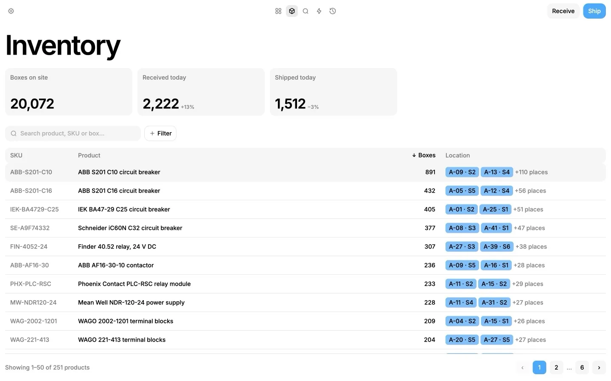
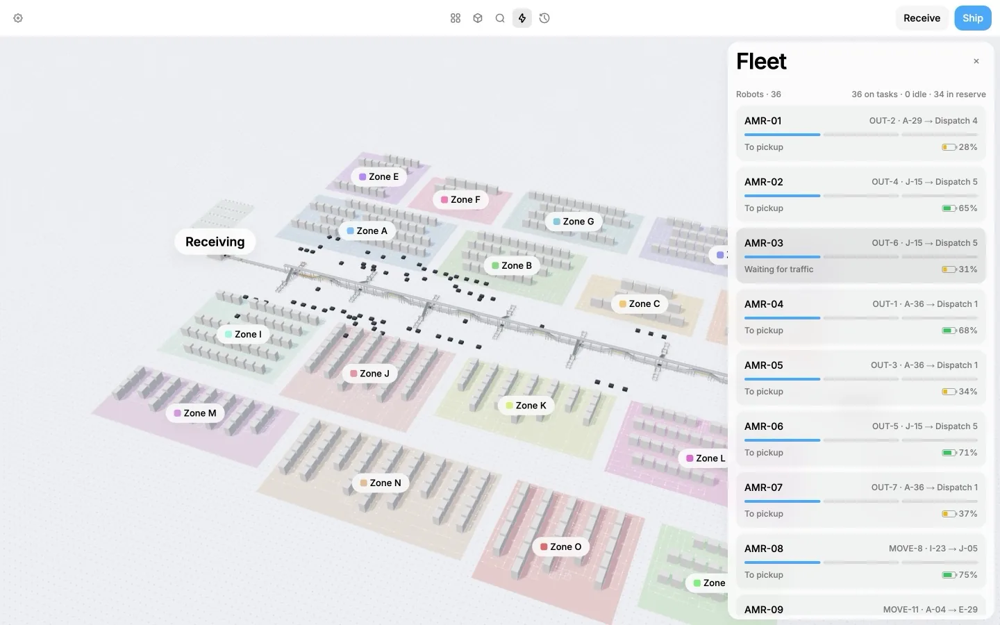
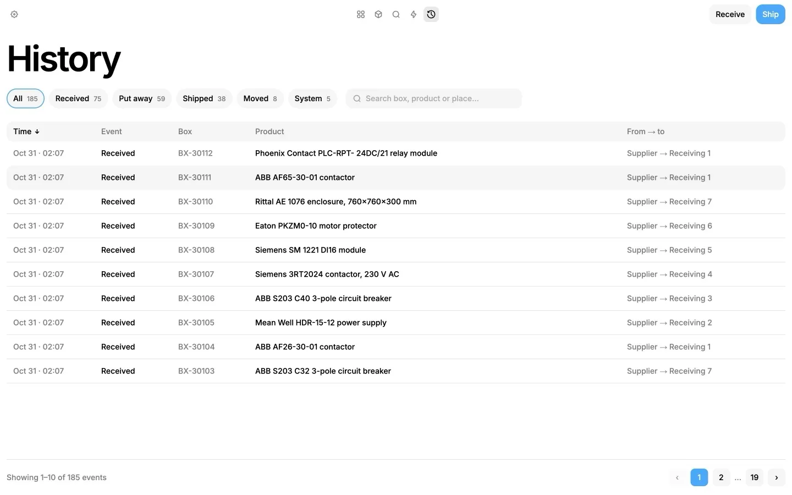

Goods arrive, robots put them away
Pick a product and a cell and press Receive. A free robot takes each box from the dock to its shelf.
Pick a product and a cell and press Receive. A free robot takes each box from the dock to its shelf.
Click through zone, rack and shelf down to a box, or search by name or number. The box card shows where it sits and where it has been.
Ship a single box from its card, or press Ship and choose a product and how many. Robots bring the nearest boxes to dispatch.




